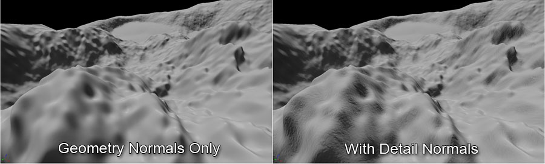

UDN
Search public documentation:
Landscape
日本語訳
中国翻译
한국어
Interested in the Unreal Engine?
Visit the Unreal Technology site.
Looking for jobs and company info?
Check out the Epic games site.
Questions about support via UDN?
Contact the UDN Staff
中国翻译
한국어
Interested in the Unreal Engine?
Visit the Unreal Technology site.
Looking for jobs and company info?
Check out the Epic games site.
Questions about support via UDN?
Contact the UDN Staff
UE3 Home > Landscape
Landscape
- Creating Landscapes - Creating and Importing new Landscapes and Converting old Terrains
- Landscape Materials - Setting up materials to be used with landscape terrains
- Editing Landscapes - Editing Landscape heightmaps and material layers
- Landscape on Mobile - Mobile-specific landscape information.
Landscape Features
text2Dlod HLSL instruction. This allows for a large number of LODs and also allows for smooth LOD transition as both mip levels can be sampled and then the heights and X and Y offsets can be interpolated in the vertex shader creating a clean morphing effect.
Heightmap and Weight Data Streaming
Since the data is being stored in textures, the standard texture streaming system in Unreal Engine 3 can be utilized to stream mipmaps in and out as needed. This not only applies to the heightmap data, but also to the weights for texture layers. Only requiring the mipmaps needed for each LOD minimizes the amount of memory being used at any time, which increases the size of the terrains that can be created since memory is freed up.
High Resolution LOD-Independent Lighting
Since the X and Y slopes of the landscape are being stored, the entire high-resolution (non-LOD'd) normal data is available for lighting calculations.
This makes it possible to always use the highest resolution of the terrain for per-pixel lighting even on distant components that have been LOD'd out.
When this high-resoluton normal data is combined with detail normal maps, landscape terrains can achieve extremely detailed lighting with very little overhead.

PhysX Collision
Landscape uses a PhysX heightfield object for its collision for both Unreal and rigid-body collision. Physical materials can be specified for each layer, and the collision system will use the dominant layer at each position to determine which physical material to use. It is possible to use a reduced resolution collision heightfield (e.g. 0.5x render resolution) to save on memory requirements for large landscape terrains. The collision and render components for distant landscape can also be streamed out using the level streaming system.